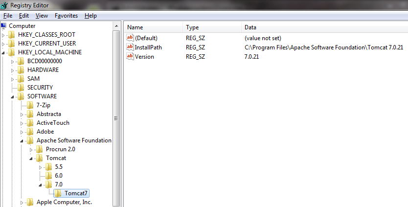
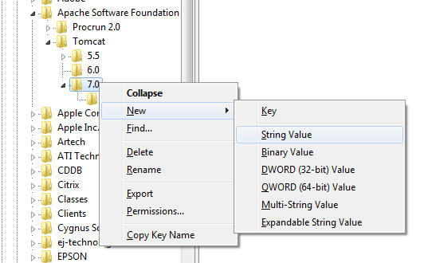
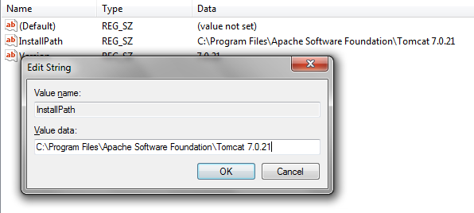

From Genexus 17 Upgrade 5 It is possible to change the tomcat default path without Manually configuring Tomcat using Tomcat path property.
For older versions please see the the information below:
In the latest upgrades of Apache Tomcat, a change has been introduced that affects the prototyping of Java Web applications (read this sac). As a result, there have been changes to the Windows registry values used by GeneXus to determine Tomcat's installation path and copy the necessary files for deployment. To learn more about the missing files, read Manually configuring Tomcat.
The purpose of this document is to show how you can change the registry to avoid manually copying the files and the potential errors that could happen due to missing some of those files.
Warning: incorrect changes to the registry could damage the operating system; for this reason, backing up the registry is recommended.
First, you need to open the Registry Editor; you can search in the Start menu, and in the search bar enter "regedit" while running the program as administrator.
Next, look for the Tomcat registry values; they are in HKEY_LOCAL_MACHINE\SOFTWARE\Apache Software Foundation\Tomcat. There you will see the following structure:

The Tomcat folder contains one or more folders with the version number (in the image it is 5.5, 6.0, and 7.0). The latest Tomcat versions create a new folder below the version folder; for example, below folder 7.0 there is another folder called Tomcat7. If you select this folder, you will see two values that are of interest: "InstallPath" and "Version."
What you have to do is copy these values to the upper directory, and in this example, it would be folder 7.0. To do so, right-click on folder 7.0, select New -> String Value, and create both keys. To edit the value, double-click on the created key.
 
Having done this, the next time you start GeneXus it will take these values correctly and you won't have to manually copy the files.
Interesting links:
Windows registry information for advanced users
Below the folder HKEY_LOCAL_MACHINE\SOFTWARE\Apache Software Foundation\Tomcat, GeneXus looks for the latest version available; if the latest version doesn’t have the properties "InstallPath" and "Version" it can’t determine Tomcat's installation path. In Tomcat 7, upon uninstalling the application the values are deleted from folder 7.0 but the folder itself is not deleted. Therefore, to uninstall Tomcat 7 and use an older version, folder 7.0 has to be manually deleted from the registry to allow determining the path of the new Tomcat.
| Backlinks |
| How to: My first GeneXus Java Application |